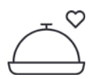
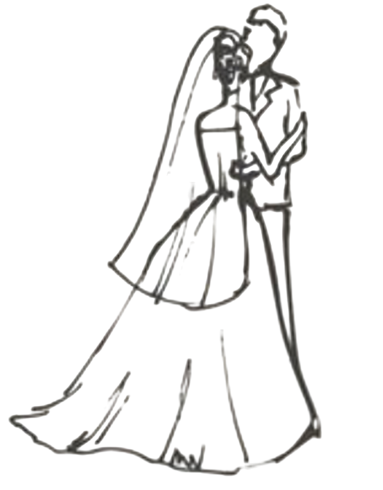
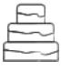
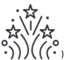
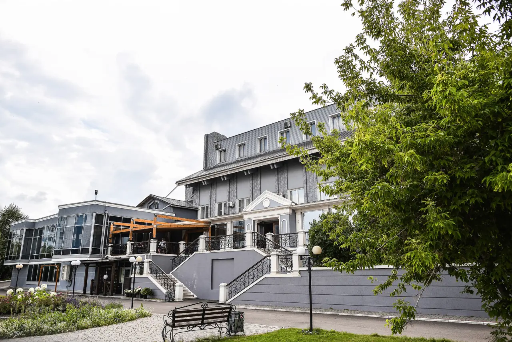

Антон &
Юлия
13 июня 2026 года
Приглашаем разделить с нами
радость самого важного дня
Встреча гостей
Время вкусной еды и напитков

Трогательный момент

Самый сладкий момент

К сожалению, даже такие
радостные дни подходят к концу

Лучшим подарком для нас станет ваш вклад в наше свадебное путешествие и обустройство семейного очага
Мы очень любим детей, но формат нашего праздника, к сожалению, не позволит разделить его с маленькими гостями. Заранее благодарим за понимание и с нетерпением ждём встречи с вами!
Главное — ваше присутствие и тёплые слова! Мы будем рады любому знаку внимания
Разделите с нами этот день — это лучший подарок, который мы можем получить
Если вы соберётесь подарить цветы — то лучше сделайте это нам в подписке. Мы не успеем насладиться их красотой, а подписка позволит продлить ещё на чуть дольше ощущение от праздника.
13 июня 2026 года — отметьте этот день в своём сердце и календаре
Мы будем рады, если вы поддержите цветовую гамму нашего праздника
Судостроительная ул., 117 а, г. Красноярск

Мы будем очень рады видеть Вас на нашем торжестве!
Если у вас есть вопросы, обращайтесь к нашему организатору
+7 (983) 290-78-93